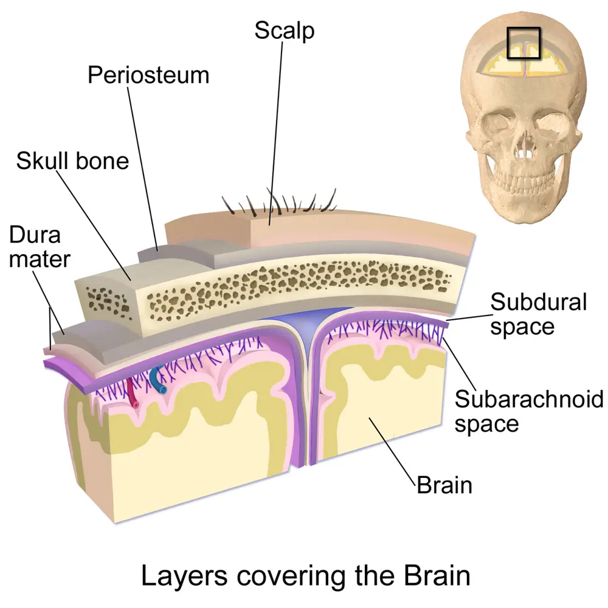

DX.4 — Hématome sous-dural
🚩 E2 — Un hématome sous-dural du nourrisson sans traumatisme expliqué évoque un traumatisme crânien non accidentel (TCNA), même chez un enfant dont le périmètre crânien (PC) est trop grandS2. Le médecin stabilise l’enfant, demande l’imagerie par résonance magnétique (IRM) cérébrale, le fond d’œil et les radiographies du squelette, puis déclenche le protocole de protection de l’enfantS1.
Ce cours DX.4 reprend les sources citées ; aucun médecin ne l’a encore validé cliniquement.
1. Définition
L’hématome sous-dural est une collection de sang, coagulé ou non, située entre la dure-mère et l’arachnoïde, souvent après la rupture d’une veine en pont qui traverse cet espaceS2. Lorsque l’arachnoïde se déchire, le sang se mêle au liquide cérébrospinal (LCS) et forme un hygroma ou un hémato-hygroma, que les radiologues nomment collection sous-duraleS2.
2. Épidémiologie (Suisse, puis Europe)
Aucune incidence suisse de l’hématome sous-dural du nourrisson n’est publiée dans les sources lues ; l’Inselspital de Berne décrit seulement l’évolution de ses suspicions de TCNAS1. La clinique comptait environ 1 à 3 cas par an, puis 1 à 2 cas de forte suspicion chaque mois entre septembre 2022 et mai 2023S1. Les chiffres européens situent la charge, et le tableau des collections chez les macrocéphales montre pourquoi l’élargissement bénin ne rassure pas à lui seul. Dans les séries publiées, 2,3 à 12,1 % des nourrissons avec élargissement bénin présentent une collection sous-duraleS2.
Chiffres utiles : incidence, part infligée et mortalité
| Donnée | Valeur | Population et lieu | Source |
|---|---|---|---|
| Suspicions de TCNA à l’Inselspital avant 2022 | Environ 1 à 3 cas par an | Berne, clinique pédiatrique | S1 |
| Suspicions fortes de TCNA de septembre 2022 à mai 2023 | 1 à 2 cas par mois | Berne, hausse passagère restée inexpliquée | S1 |
| Incidence du traumatisme crânien infligé | 14 à 40 cas pour 100 000 enfants | Pays industrialisés, revue de 2026 | S3 |
| Incidence avant un an | 29,7 pour 100 000 années-personnes | Revue européenne de 2026 | S3 |
| Incidence de l’hématome sous-dural aigu de l’enfant | 20 à 25 cas pour 100 000 enfants | Littérature citée à Vienne | S4 |
| Hématomes sous-duraux du nourrisson dus à une maltraitance | 42 à 82 % | Littérature citée à Vienne | S4 |
| Mortalité hospitalière de l’hématome sous-dural de l’enfant | 11 à 36 % dans la littérature ; 11 % à Vienne | Autriche, 47 enfants de 1992 à 2010 | S4 |
| Hématome sous-dural lié à la maltraitance | 20 % de mortalité et 50 % de séquelles neurologiques | Littérature citée à Vienne | S4 |
| Impact rapporté par les auteurs lors des aveux | Seulement 24 % des cas | Revue européenne de 2026 | S3 |
Les chiffres d’incidence viennent d’Europe et de pays industrialisés, car aucun registre suisse n’a été lu ; leur transposition à la Suisse reste donc une déduction.
La part infligée varie beaucoup selon les séries, car les centres n’explorent pas tous les enfants avec le même protocoleS2.
Collections sous-durales chez les nourrissons avec élargissement bénin
| Constat | Chiffre | Lecture clinique | Source |
|---|---|---|---|
| Collections sous-durales parmi les enfants avec élargissement bénin | 128 sur 1705, soit 7,5 % (0 à 42,1 % selon les études) | La collection reste rare, mais elle n’est pas exceptionnelle | S2 |
| Enfants avec élargissement bénin et collection réellement explorés | 83 sur 191 | Plus de la moitié n’a reçu ni radiographies du squelette ni fond d’œil | S2 |
| Lésions associées parmi les enfants explorés | 28 sur 83, soit 33,7 % | Hémorragies rétiniennes étendues ou fractures | S2 |
| Lésions suspectes chez les enfants peu ou pas symptomatiques | Jusqu’à 35 % | L’absence de symptôme ne dispense pas du bilan | S2 |
| Incidence de l’élargissement bénin | 0,4 pour 1000 naissances vivantes | Garçons plus souvent touchés ; pic vers 7 mois | S2 |
Le groupe de travail européen recommande donc un bilan complet de maltraitance chez tout nourrisson macrocéphale porteur d’une collection sous-duraleS2.
Séries publiées : collections et lésions associées chez les macrocéphales
| Série | Enfants avec élargissement bénin | Collections sous-durales | Lésions associées chez les enfants explorés | Source |
|---|---|---|---|---|
| Hansen et coll., 1999 | Non applicable | 34 | 17 enfants, soit 50 % | S2 |
| McKeag et coll., 2013 | 177 | 4 (2,3 %) | 1 enfant sur 4 avec fractures de côtes anciennes | S2 |
| Greiner et coll., 2013 | 108 | 6 (5,6 %) | 1 enfant avec hémorragies rétiniennes inquiétantes | S2 |
| Tucker et coll., 2016 | 311 | 18 (5,8 %) | Aucune lésion chez l’unique enfant exploré | S2 |
| Lee et coll., 2017 | 213 | 20 (9,4 %) | Fond d’œil chez 4 enfants seulement | S2 |
| Alshareef et coll., 2022 | 109 | 11 (10 %) | 1 enfant considéré comme maltraité | S2 |
| Holste et coll., 2022 | 480 | 58 (12,1 %) | 7 enfants, soit 12 % | S2 |
Ces séries proviennent pour la plupart d’Amérique du Nord ; la revue qui les compile est européenne, mais leurs chiffres ne décrivent pas une population suisse.
Les écarts entre séries reflètent surtout des modalités d’imagerie et des pratiques d’exploration différentes selon les centresS2.
3. Physiopathologie
Les veines en pont relient le cortex aux sinus duraux ; leur rupture libère du sang dans l’espace sous-dural, où se forment ensuite des caillots et des néomembranesS2. Une déchirure de l’arachnoïde laisse passer le LCS, ce qui produit des collections de densité proche du liquide et brouille la frontière avec l’élargissement béninS2. Les mécanismes, la datation à l’imagerie et la planche anatomique en couleurs détaillent ces étapes.
Le secouement violent et répété reste le mécanisme le plus souvent rapporté, alors qu’un impact n’est décrit que dans 24 % des aveuxS3. De grosses collections bilatérales gênent ensuite la résorption du LCS par les granulations arachnoïdiennes, si bien qu’elles peuvent elles-mêmes produire une macrocrânieS2.
Mécanismes et conséquences de l’hématome sous-dural du nourrisson
| Étape | Mécanisme | Traduction clinique ou radiologique | Source |
|---|---|---|---|
| Accélération et décélération | Secouement violent, parfois suivi d’un impact | Hématome multifocal, lésions cervicales ou médullaires associées | S3 |
| Rupture des veines en pont | Thrombose ou rupture au vertex | Caillots au vertex ; « signe du têtard » à l’IRM | S2, S1 |
| Déchirure arachnoïdienne | Mélange de sang et de LCS | Hygroma ou hémato-hygroma de densité proche du LCS | S2 |
| Organisation | Formation de néomembranes et de cloisons | Collection multiloculée, signaux différents selon les compartiments | S2 |
| Retentissement cérébral | Œdème cytotoxique ou lésion hypoxique | Convulsions, apnée, troubles de conscience | S2, S1 |
| Retentissement sur le LCS | Résorption diminuée par les granulations bloquées | Macrocrânie et élargissement secondaire des espaces | S2 |
| Hypothèse d’élargissement bénin | Étirement des vaisseaux par la translocation du cerveau | Collection isolée possible après un traumatisme mineur | S2 |
Le lien entre la profondeur des espaces sous-arachnoïdiens et la survenue d’une collection reste controversé, car des suivis à long terme ne montrent pas de risque accruS2.
Ce que l’imagerie peut dire de l’âge des lésions
| Signe | Délai observé | Valeur | Source |
|---|---|---|---|
| Hyperdensité au scanner | Jusqu’à 9 jours après la lésion | Saignement récent, sans datation précise | S3 |
| Membranes au scanner | Jusqu’à 283 jours | Collection ancienne ou répétée | S3 |
| Membranes à l’IRM | Dès 2 à 4 semaines | Organisation de la collection | S3 |
| Signe du têtard (caillot sur une veine en pont) | Entre le jour 0 et le jour 11, ou jusqu’au jour 46 selon la séquence | Phénomène précoce du TCNA | S3 |
| Hémosidérine sur les membranes | Variable | Aide possible à l’estimation de l’âge | S3 |
La neuro-imagerie fournit un intervalle de temps, mais elle ne date pas précisément une lésion ni ne prouve à elle seule des traumatismes répétésS3.
Planche anatomique : où se loge la collection
Enveloppes du cerveau. Blausen Medical représente en couleurs les couches qui séparent le cuir chevelu du cortex, ce qui permet de situer l’espace sous-duralS6.

Le lecteur cherche d’abord seul la dure-mère, l’espace sous-dural et les veines, puis il compare avec la copie annotée.
- L’os du crâne limite le volume disponible dès que les sutures se ferment.
- La dure-mère est accolée à la face interne de l’os et forme la limite externe de l’espace sous-dural.
- L’espace sous-dural reste virtuel à l’état normal, et l’hématome s’y collecte lorsque les veines ponts se rompent.
- L’espace sous-arachnoïdien contient le LCS et s’élargit nettement dans l’élargissement bénin du nourrisson macrocéphale.
- La veine corticale permet le drainage du cortex vers les sinus duraux à travers les espaces.
- Le cortex cérébral se trouve refoulé lorsque la collection exerce un effet de masse.
L’élargissement bénin agrandit l’espace marqué 4, alors que l’hématome occupe l’espace marqué 3 et refoule les vaisseaux contre le cortexS2.
4. Démarche diagnostique
À l’Inselspital, l’équipe stabilise d’abord l’enfant, recherche puis exclut les diagnostics dangereux et fréquents, et instaure ensuite les traitements nécessairesS1. La triade convulsions, troubles respiratoires et troubles de la conscience place le TCNA en tête de liste et impose la recherche des lésions associéesS1. Les étapes chronologiques fixent l’IRM de la colonne au lendemain, car 24 % des TCNA comportent des lésions médullaires ; les diagnostics différentiels suiventS1.
Chez le nourrisson macrocéphale sans symptôme, la démarche commence par l’échographie ; toute collection sous-durale déclenche ensuite le même bilan completS2. Le médecin intègre enfin l’anamnèse, l’examen et l’imagerie, car aucun signe isolé ne suffit à affirmer ni à exclure la maltraitanceS3.
Démarche chronologique devant un nourrisson avec collection sous-durale
| Temps | Action | Précision chiffrée ou délai | Source |
|---|---|---|---|
| Admission | Stabilisation, traitement de la convulsion, échographie au lit, puis IRM cérébrale urgente | Imagerie guidée par les signes d’admission | S1 |
| Premier jour | Examen ophtalmologique par un spécialiste expérimenté | Les hémorragies rétiniennes peuvent guérir dès 3 jours | S1, S2 |
| Premier jour | Prélèvements selon le « pack de laboratoire » et avis de neuropédiatrie | Exclure une maladie de la coagulation ou métabolique | S1 |
| Lendemain | Échographie abdominale et IRM de la colonne entière | Lésions médullaires dans 24 % des TCNA | S1 |
| Dès que l’état le permet | Radiographies complètes du squelette | Lésions métaphysaires guéries en 2 semaines environ | S1, S2 |
| Environ 2 semaines | Radiographies de contrôle du squelette | Fractures récentes visibles après 7 à 10 jours | S3 |
| Tout au long | Groupe de protection de l’enfance, médecine légale, information des parents | Coordination avec la police et l’autorité de protection | S1 |
Chez Nik, l’instabilité a repoussé les radiographies du squelette au quatrième jour ; elles ont alors montré des fractures de côtes et des lésions métaphysairesS1.
Diagnostics différentiels envisagés à l’admission
| Diagnostic | Argument qui l’évoque | Examen qui tranche | Source |
|---|---|---|---|
| Méningite | Fièvre, fontanelle bombée, convulsion | Bilan infectieux et ponction selon le contexte | S1 |
| Hémorragie par trouble de la coagulation | Saignements, ecchymoses multiples | Bilan de l’hémostase, avis d’hématologie | S1, S2 |
| Phénomène épileptique primaire | Convulsion sans lésion à l’imagerie | IRM, électroencéphalogramme | S1 |
| Hypoglycémie | Convulsion, pâleur, troubles de conscience | Glycémie immédiate | S1 |
| Traumatisme accidentel | Récit constant, impact compatible | Hématome unifocal avec contusion et fracture linéaire du même côté | S3 |
| Collection associée à l’élargissement bénin | Enfant asymptomatique, croissance du PC attendue | Collection homogène, veines continues, bilan de maltraitance négatif | S2 |
| Hydrocéphalie | Fontanelle bombée, regard en coucher de soleil | Ventricules dilatés à l’imagerie | S2 |
Le tableau bernois des diagnostics différentiels ne prétend pas être exhaustif ; il guide surtout les premiers examens d’exclusionS1.
5. Anamnèse ciblée et drapeaux rouges
L’anamnèse recherche un récit absent, incohérent, changeant ou incompatible avec l’âge de l’enfant, car ce critère pèse dans toutes les classifications françaises citéesS3. Un retard à consulter, des traumatismes antérieurs inexpliqués dans la fratrie et un contexte social à risque constituent aussi des drapeaux rougesS2. Parmi les drapeaux rouges, une ecchymose chez un nourrisson qui ne se déplace pas seul impose l’examen de toute la peau ; les questions ciblées précisent le récitS1.
Les signes non spécifiques, comme une convulsion de moins de 5 minutes, des pleurs ou une somnolence, ne distinguent pas à eux seuls le TCNA d’une collection bénigneS2. À l’inverse, une apnée, une perte de connaissance ou un décès n’ont pas été décrits dans l’élargissement bénin et orientent donc vers un traumatismeS2.
Questions ciblées et lecture des réponses
| Question | Réponse inquiétante | Interprétation | Source |
|---|---|---|---|
| Que s’est-il passé, et qui était présent ? | Aucun récit, ou récit qui change d’un interlocuteur à l’autre | Critère majeur de suspicion | S3 |
| Quand l’enfant a-t-il changé de comportement ? | Délai entre l’événement et la consultation | Retard à consulter : drapeau rouge | S2 |
| Le récit correspond-il au développement de l’enfant ? | Chute de 40 cm décrite deux jours avant des convulsions | Mécanisme insuffisant pour les lésions, comme chez Nik | S1 |
| L’enfant ou la fratrie ont-ils déjà eu des blessures ? | Traumatismes inexpliqués ou fréquents | Antécédent à documenter | S2 |
| Comment se passent les pleurs et le sommeil à la maison ? | Parents dépassés, isolement | Facteur de risque et cible de soutien | S1 |
| Existe-t-il une maladie hémorragique familiale ? | Saignements chez un parent | Bilan de l’hémostase orienté | S2 |
| Le PC a-t-il été suivi sur le carnet ? | Croisement brutal des centiles | Collection compressive ou hydrocéphalie | S2 |
Le groupe de protection de l’enfance annonce aux parents, avec une formule homogène, qu’il s’entretient systématiquement avec eux lorsque des lésions pourraient avoir été infligéesS1.
Drapeaux rouges et conduite immédiate
| Drapeau rouge | Diagnostic à craindre | Conduite | Source |
|---|---|---|---|
| Convulsions, troubles respiratoires, troubles de conscience | TCNA avec hématome sous-dural | Stabilisation, imagerie cérébrale en urgence | S1 |
| Apnée ou perte de connaissance | Traumatisme plutôt que collection bénigne | Soins intensifs, bilan complet | S2 |
| Ecchymoses chez un nourrisson encore incapable de se déplacer seul | Lésion infligée | Examen de toute la peau, médecine légale précoce | S1, S3 |
| Fontanelle bombée, hypertonie, regard fixe | Hypertension intracrânienne | Imagerie et avis neurochirurgical | S2 |
| PC qui croise brusquement les centiles | Collection compressive | Échographie puis IRM | S2 |
| Vomissements répétés ou somnolence après une chute | Saignement intracrânien | Consultation immédiate et surveillance hospitalière | S5 |
Les ecchymoses sentinelles sont souvent manquées par les examinateurs, alors qu’elles précèdent fréquemment un traumatisme plus graveS3.
6. Examen physique ciblé, région par région
L’examen se fait de la tête aux pieds, enfant déshabillé, car les lésions cutanées, buccales et génitales peuvent être les seules preuves d’un traumatisme associéS2. Une fenêtre décrit chaque région : la tête et la fontanelle, les yeux et la peau, la bouche et les organes génitaux. Trois autres fenêtres couvrent le thorax et l’abdomen, les membres et le rachis puis le système nerveux.
Tête et fontanelle
| Geste | Constat | Interprétation | Source |
|---|---|---|---|
| Mesurer le PC et le reporter sur la courbe | Au-dessus de +2 déviations standards (DS), ou croisement des centiles | Macrocéphalie : collection, hydrocéphalie ou élargissement bénin | S2 |
| Comparer avec les mesures antérieures | Début brutal de la macrocrânie | Possible après un TCNA aigu ; critère non encore défini | S2 |
| Palper la fontanelle antérieure | Fontanelle bombée | Hypertension intracrânienne | S2 |
| Palper le cuir chevelu | Bosse, tuméfaction, déformation | Impact ; fracture du crâne possible | S3, S5 |
| Inspecter les oreilles | Hématomes des lobes | Lésion infligée probable chez le nourrisson | S1 |
Les Hôpitaux universitaires de Genève (HUG) recommandent la radiographie du crâne avant un an seulement en présence d’un gros hématome ou d’une grosse bosseS5.
Yeux
| Geste | Constat | Interprétation | Source |
|---|---|---|---|
| Fond d’œil dilaté par un ophtalmologue | Hémorragies rétiniennes nombreuses, sur plusieurs couches, jusqu’à la périphérie | Forte présomption de TCNA en l’absence d’autre cause | S3 |
| Fond d’œil | Hémorragies limitées au pôle postérieur | Moins spécifiques ; classement discuté | S3 |
| Fond d’œil | Œdème papillaire | Hypertension intracrânienne | S3 |
| Observer le regard | Regard dévié ou en partie fixé d’un côté | Crise focale ou lésion hémisphérique | S1 |
| Tester les pupilles | Pupille aréactive | Lésion sévère ; signe de gravité | S4, S5 |
Les hémorragies rétiniennes accompagnent environ 85 % des TCNA, mais elles restent exceptionnelles dans l’élargissement béninS2.
Peau, bouche et organes génitaux
| Geste | Constat | Interprétation | Source |
|---|---|---|---|
| Inspecter toute la peau, enfant nu | Hématomes des jambes, des avant-bras ou des oreilles | Lésions sentinelles d’un traumatisme infligé | S1, S3 |
| Photographier et faire relever les lésions | Hématomes encore visibles | Relevé objectif par la médecine légale | S1 |
| Examiner la bouche | Lésion du frein ou de la muqueuse | Stigmate soutenant fortement l’hypothèse d’abus | S2 |
| Examiner les organes génitaux | Lésion inexpliquée | Stigmate soutenant fortement l’hypothèse d’abus | S2 |
| Rechercher pâleur et pétéchies | Pâleur, saignements multiples | Anémie, trouble de la coagulation à exclure | S1 |
Chez un enfant avec élargissement bénin et collection, une lésion de la peau, de la bouche ou des organes génitaux soutient fortement l’abus même sans autre anomalieS2.
Thorax et abdomen
| Geste | Constat | Interprétation | Source |
|---|---|---|---|
| Compter la fréquence respiratoire | Variation de 20 à 55 par minute, bradypnée | Atteinte du tronc cérébral ou crise | S1 |
| Palper les côtes | Douleur, cal palpable | Fractures de côtes, présentes dans 22 % des TCNA | S1 |
| Palper l’abdomen | Défense, distension | Lésion d’un organe abdominal, dans 4 % des TCNA | S1 |
| Contrôler pouls, tension et saturation | Instabilité hémodynamique | Hémorragie associée ; soins intensifs | S4 |
Les fractures costales sont typiquement multiples, contiguës, symétriques et postérieures, près des articulations costovertébralesS3.
Membres et rachis
| Geste | Constat | Interprétation | Source |
|---|---|---|---|
| Palper les métaphyses des os longs | Tuméfaction, douleur à la mobilisation | Fracture métaphysaire « en anse de seau », dans 23 % des TCNA | S1 |
| Observer la motricité spontanée | Membre immobile | Fracture ou déficit neurologique | S1 |
| Examiner le rachis et la nuque | Douleur, raideur | Lésion cervicale ou hémorragie médullaire, dans 24 % des TCNA | S1, S3 |
Les lésions métaphysaires classiques guérissent en 2 semaines environ, ce qui impose des radiographies précoces puis un contrôleS2.
Système nerveux
| Geste | Constat | Interprétation | Source |
|---|---|---|---|
| Évaluer la conscience | Apathie, somnolence, coma | Gravité ; score de Glasgow pédiatrique | S4, S5 |
| Évaluer le tonus | Hypertonie généralisée | Souffrance cérébrale diffuse | S2 |
| Observer les mouvements | Tressaillements d’un hémicorps | Crise focale | S1 |
| Tester réflexes et sensibilité | Asymétrie | Lésion focale | S5 |
| Reprendre le développement | Acquisitions normales et enfant asymptomatique | Argument pour une collection associée à l’élargissement bénin | S2 |
À Vienne, le statut neurologique, l’âge et la gravité du traumatisme ont été les principaux déterminants du pronosticS4.
7. Approche syndromique
Trois tableaux syndromiques mènent à l’hématome sous-dural : l’encéphalopathie aiguë du nourrisson, l’hypertension intracrânienne et la macrocéphalie découverte par la courbeS1S2. Le tableau des syndromes rappelle qu’une encéphalopathie aiguë du nourrisson impose d’écarter un TCNA, une méningite et une hypoglycémieS1.
Syndromes d’entrée et diagnostic à écarter
| Syndrome | Signes | Diagnostics à écarter | Source |
|---|---|---|---|
| Encéphalopathie aiguë du nourrisson | Convulsions, bradypnée, trouble de conscience | TCNA, méningite, hypoglycémie | S1 |
| Hypertension intracrânienne | Fontanelle bombée, irritabilité, regard fixe, hypertonie | Collection compressive, hydrocéphalie (DX.3), tumeur (DX.5) | S2 |
| Macrocéphalie avec retard psychomoteur, collection sous-durale | Croissance anormale du PC, régression possible | Acidurie glutarique de type 1, à confirmer par des examens spécifiques ; maladie de Menkes | S9 |
| Macrocéphalie isolée | PC élevé, enfant éveillé et souriant | élargissement bénin (DX.2), macrocéphalie familiale (DX.1) | S2 |
| Traumatisme crânien rapporté | Chute, vomissements, somnolence | Hématome traumatique accidentel | S5, S4 |
Un enfant macrocéphale qui devient symptomatique doit faire rechercher une collection ou une autre anomalie invisible à l’échographieS2.
8. Diagnostic positif et critères
L’imagerie affirme la collection, mais l’origine infligée repose sur l’ensemble des lésions, du récit et des diagnostics différentiels écartésS3. Les niveaux de suspicion français, les critères radiologiques et la classification des hémorragies rétiniennes fixent les seuils.
Une collection homogène, sans caillot au vertex, avec des veines continues chez un nourrisson asymptomatique dont la courbe reste attendue favorise l’élargissement béninS2. Ce diagnostic d’exclusion n’est retenu qu’après un bilan de maltraitance complet et négatifS2.
Niveaux de suspicion selon les recommandations françaises de 2017
| Niveau | Hémorragies extra-axiales | Hémorragies rétiniennes et récit | Source |
|---|---|---|---|
| Hautement probable | Multifocales avec caillots au vertex, ou multifocales avec hémorragies rétiniennes, ou unifocales avec lésion cervicale ou médullaire | Tout type ; récit fluctuant ou incompatible, diagnostics différentiels écartés | S3 |
| Probable | Multifocales même sans autre lésion, ou unifocales avec hémorragies limitées au pôle postérieur | Récit fluctuant ou incompatible avec les lésions ou l’âge | S3 |
| Possible | Unifocales (version de 2011) | Non précisé en 2017 | S3 |
| Écarté | Unifocales avec marque d’impact, contusion et éventuelle fracture linéaire au même endroit | Récit constant et compatible avec l’âge | S3 |
Ces niveaux viennent de recommandations françaises, citées par une revue européenne ; aucune grille suisse équivalente n’a été lue.
La révision de 2017 ne classe plus les hémorragies rétiniennes par type, ce qui simplifie leur emploiS3.
Distinguer élargissement bénin et collection sous-durale
| Critère | Élargissement bénin | Collection sous-durale | Source |
|---|---|---|---|
| Largeur cranio-corticale | Au-delà de 5 mm : élargie ; au-delà de 10 mm : nettement élargie | Variable, parfois minime | S2 |
| Vaisseaux au Doppler | Traversent toute la largeur de l’espace | Refoulés contre le cortex | S2 |
| Membrane arachnoïdienne | Invisible | Ligne parallèle à la dure-mère, visible | S2 |
| Effet de masse | Absent : ni aplatissement cortical ni déviation | Possible | S2 |
| Compartiments liquidiens à l’IRM | Un seul, de signal du LCS | Au moins deux, de signaux différents | S2 |
| Fenêtre sous-durale au scanner | Inutile | Centre de 50 à 100 unités Hounsfield (HU), largeur de 130 à 300 HU | S2 |
Le radiologue compare la densité du liquide de la convexité à celle des ventricules, afin de ne pas confondre des hygromas symétriques avec un élargissement béninS2.
Classification des hémorragies rétiniennes
| Type | Aspect | Siège | Source |
|---|---|---|---|
| Type 1 | En flammèches, en taches ou en points | Intrarétiniennes, au pôle postérieur | S3 |
| Type 2 | Petites, en dôme | Pôle postérieur, autour du disque optique ou en périphérie | S3 |
| Type 3 | Profuses et multiples, parfois avec plages maculaires | Intra-, pré- ou sous-rétiniennes, jusqu’à la périphérie | S3 |
Aucun aspect rétinien n’est entièrement spécifique, mais des hémorragies prérétiniennes, sous-rétiniennes ou périphériques sans autre cause rendent le TCNA très probableS3.
9. Examens complémentaires
Le bilan associe imagerie cérébrale, fond d’œil, radiographies du squelette initiales puis de contrôle, IRM du rachis et analyses excluant une maladie de la coagulationS1S2. Le tableau des examens donne pour chacun l’indication, le délai, l’interprétation et la conduite ; le protocole d’IRM et le bilan osseux précisent les techniques.
Le fond d’œil et les radiographies doivent être faits tôt, car les hémorragies rétiniennes peuvent disparaître dès 3 jours et les lésions métaphysaires en 2 semainesS2.
Examens ciblés : indication, délai, interprétation et conduite
| Examen | Indication et délai | Interprétation | Conduite | Source |
|---|---|---|---|---|
| Échographie transfontanellaire avec sonde linéaire et Doppler couleur | Nourrisson macrocéphale ; au lit dès l’admission | Vaisseaux traversants : élargissement bénin ; membrane visible et vaisseaux refoulés : collection | Toute collection : IRM et bilan complet | S2, S1 |
| IRM cérébrale avec séquences de susceptibilité et de diffusion | En urgence si signes neurologiques | Compartiments multiples, sang, œdème cytotoxique, signe du têtard | Neurochirurgie si effet de masse | S2, S1 |
| Scanner cérébral avec fenêtre sous-durale | Enfant instable, IRM indisponible | Hyperdensité jusqu’à 9 jours ; collections fines mieux vues | IRM dès que possible | S2, S3 |
| Fond d’œil dilaté par un ophtalmologue | Le plus tôt possible, au premier jour | Hémorragies étendues, multicouches, périphériques | Documenter, au mieux par photographie | S1, S2, S3 |
| Radiographies complètes du squelette | Tous les nourrissons avec collection, même si le fond d’œil est normal | Fractures de côtes, métaphysaires ou du crâne | Contrôle à 2 semaines environ | S2, S3 |
| IRM de la colonne entière | Si incluse dans le protocole ; lendemain de l’admission à Berne | Lésions cervicales visibles chez 15 à 78 % à l’IRM ; lésions thoracolombaires possibles malgré des radiographies normales | Avis spécialisé | S2, S1, S3 |
| Échographie abdominale | Lendemain de l’admission | Lésion d’organe, présente dans 4 % des TCNA | Chirurgie pédiatrique si lésion | S1 |
| Formule sanguine, hématocrite, ionogramme, lactates | Dès l’admission, set d’ordonnances standardisé | Hématocrite inférieur à 30 % ou plaquettes supérieures à 400 G/l sans explication : signe d’alerte biologique | Compléter le bilan de maltraitance ; avis d’hématologie | S1, S9 |
| Bilan d’hémostase : plaquettes, TP (taux de prothrombine), TCA (temps de céphaline activé), fibrinogène, facteur Von Willebrand (RCo et Ag), facteurs VIII, IX et XI | Toute collection sous-durale, au premier jour | Valeur hors des normes du laboratoire pour l’âge : trouble congénital (hémophilie, Willebrand) ou acquis (thrombopénie) ; seuils chiffrés par âge : À vérifier | Avis d’hématologie ; un trouble de l’hémostase n’exclut pas une maltraitance surajoutée | S9, S2 |
| Transaminases et lipase | Au premier jour | Élévation : lésion abdominale occulte | Échographie abdominale | S9 |
| Acides organiques urinaires et acylcarnitines (acidurie glutarique de type 1) | Seulement si anomalie clinique préalable : croissance anormale du PC, retard psychomoteur | Profil anormal : maladie métabolique qui imite le TCNA | Avis de métabolisme ; protection de l’enfant poursuivie jusqu’à conclusion | S9 |
La Haute Autorité de santé (HAS) liste ce bilan biologique chez tout nourrisson suspect ; le set bernois le regroupe dans un tableau-image non lisible en texteS9S1.
Protocole d’IRM et lecture des séquences
| Séquence | Ce qu’elle montre | Piège | Source |
|---|---|---|---|
| Pondération T2 (temps de relaxation transversale) et séquence FLAIR (fluid attenuated inversion recovery) | Compartiments liquidiens et leurs signaux différents | Collection de signal identique au LCS | S2 |
| Séquence de susceptibilité magnétique (T2*) | Produits sanguins, thrombose d’une veine en pont | Omise dans les protocoles rapides | S2 |
| Diffusion | Œdème cytotoxique | Doit faire partie du protocole de routine | S2 |
| Veinographie par résonance magnétique | Hypoplasie des sinus transverses dans certains élargissements | Ne prouve pas l’origine d’une collection | S2 |
L’IRM reste la technique la plus performante pour les lésions cérébrales, tandis que le scanner garde sa place pour les fenêtres osseusesS3.
Bilan osseux : quoi, quand, pourquoi
| Temps | Examen | Justification | Source |
|---|---|---|---|
| Initial | Radiographies complètes du squelette | Peuvent révéler une lésion clé même avec un fond d’œil normal | S2 |
| Environ 2 semaines plus tard | Radiographies de contrôle | Les fractures récentes n’apparaissent qu’après 7 à 10 jours | S3 |
| Indication renforcée | Bilan osseux sans délai | Enfant symptomatique, antécédents de traumatismes, collection volumineuse et hémorragique | S2 |
Le groupe européen reconnaît que certains pédiatres renoncent aux radiographies par crainte de l’irradiation, mais il recommande le bilan complet pour ne pas manquer une lésion occulteS2.
10. Arbre décisionnel
L’arbre commence par la stabilisation, distingue ensuite l’enfant symptomatique de l’enfant macrocéphale asymptomatique, puis applique à toute collection le même bilanS1S2. L’arbre décisionnel détaillé rassemble ces nœuds et précise le délai de chacun.
- Si le nourrisson convulse ou respire mal, le médecin le stabilise, traite la crise et demande une imagerie cérébrale en urgenceS1.
- Si l’échographie d’un macrocéphale montre des vaisseaux traversants sans membrane, il retient un élargissement bénin et surveille la courbeS2.
- Si une collection sous-durale apparaît, il la traite comme un drapeau rouge E2 : bilan complet du point 9 et signalement au groupe de protection de l’enfantS2S1.
- Si l’imagerie montre un effet de masse, une déviation de plus de 5 mm ou des citernes comprimées, il appelle le neurochirurgienS4.
- Si une lésion associée ou un récit incohérent apparaît, il active le groupe de protection de l’enfance et la médecine légaleS1.
- Si la suspicion persiste après le bilan initial, une plainte contre inconnu est déposée et l’autorité de protection est aviséeS1.
Arbre décisionnel détaillé
| Nœud | Question | Oui | Non | Source |
|---|---|---|---|---|
| 1 | L’enfant est-il instable, convulsant ou comateux ? | Réanimation, crise traitée, imagerie urgente | Passer au nœud 2 | S1, S4 |
| 2 | Une collection sous-durale est-elle visible ? | Passer au nœud 3 | Surveillance du PC ; autre diagnostic | S2 |
| 3 | Existe-t-il un effet de masse ou une déviation de plus de 5 mm ? | Neurochirurgie dans l’heure si l’état l’exige | Traitement conservateur surveillé | S4 |
| 4 | Le fond d’œil, le squelette, la peau ou le rachis montrent-ils une lésion ? | TCNA probable : protection de l’enfant | Passer au nœud 5 | S2, S3 |
| 5 | Le récit est-il constant et compatible avec l’âge ? | Origine accidentelle ou bénigne discutée | Suspicion maintenue : protection de l’enfant | S3 |
| 6 | La suspicion persiste-t-elle après le bilan initial ? | Plainte contre inconnu, avis de mise en danger | Suivi clinique de quelques mois | S1, S2 |
Même lorsque l’abus n’est pas retenu, le groupe européen conseille de suivre l’enfant quelques mois, idéalement avec un pédiatre spécialisé en maltraitanceS2.
11. Prise en charge selon les recommandations suisses
11.A But : la prise en charge protège d’abord le cerveau, en traitant l’hypertension intracrânienne et les convulsions, puis protège l’enfant d’une récidiveS4S1. Elle vise ensuite le meilleur développement possible, grâce à un suivi neurodéveloppemental et à une rééducation précoce chez les survivantsS3.
11.B Moyens : le traitement structuré réunit molécule, dose de l’information professionnelle suisse des médicaments (AIPS), durée, contrôle et critère d’échecS7S8. Les fiches midazolam et lévétiracétam recopient l’AIPS ; la neurochirurgie, la gravité comparée des opérés et la protection de l’enfant complètent les moyens.
11.C Surveillance : la surveillance datée fixe les contrôles cliniques, radiologiques et sociaux, de la réanimation jusqu’au suivi par l’autorité de protectionS1S4.
11.D Pronostic : à Vienne, 70 % des enfants ont obtenu une bonne évolution clinique et neurologique, mais l’origine infligée et le jeune âge assombrissent le pronosticS4. Le tableau pronostique montre qu’à Vienne, 68 % des 47 enfants avaient bien récupéré au dernier suiviS4.
Traitement structuré de l’hématome sous-dural du nourrisson
| Problème | Moyen | Dose AIPS ou modalité | Durée et contrôle | Critère d’échec | Source |
|---|---|---|---|---|---|
| Crise convulsive aiguë prolongée, dès 6 mois | Midazolam buccal, Buccolam | 2.5 mg de 6 mois à moins d’un an ; 5 mg de 1 an à moins de 5 ansS7 | Une dose ; seconde dose pas avant 30 minutes et seulement sur avis médical | Crise qui persiste 10 minutes après la dose | S7 |
| Crise avant 6 mois | Midazolam | Innocuité non établie avant 6 mois selon l’AIPS : décision des soins intensifs | Surveillance respiratoire en milieu équipé | Dépression respiratoire | S7 |
| Épilepsie focale séquellaire, dès 1 mois | Lévétiracétam en solution buvable, Keppra, « en association » seulement avant 16 ans ; monothérapie de l’enfant hors AIPS | 7 mg/kg deux fois par jour, puis paliers jusqu’à 21 mg/kg deux fois par jour avant 6 moisS8 | Paliers de 2 semaines ; dose minimale efficace | Crises persistantes à dose maximale ; avis neuropédiatrique | S8 |
| Collection compressive | Trépanation, craniotomie ou craniectomie | Intervention dans l’heure chez les plus graves | Pression intracrânienne mesurée ; ablation sans valeur au-dessus de 10 mmHg pendant 24 heures | Reprise chirurgicale, nécessaire chez 25 % des opérés à Vienne | S4 |
| Collection sans effet de masse | Traitement conservateur | Enfant sans déficit, déviation de moins de 5 mm, citernes ouvertes | Imagerie et examen neurologique répétés | Aggravation imposant une chirurgie différée | S4 |
| Danger au domicile | Protection de l’enfant | Groupe de protection, médecine légale, police, autorité de protection | Placement si nécessaire ; suivi après la sortie | Nouvelle lésion ou rupture du suivi | S1 |
Les deux doses de lévétiracétam proviennent de l’AIPS pour l’épilepsie focale ; l’emploi dans une crise aiguë symptomatique sort de l’indication enregistrée et relève du neuropédiatreS8.
Midazolam — Buccolam, solution buccale (n° 62556)
| Rubrique | Contenu de l’AIPS (information professionnelle suisse) |
|---|---|
| Indication | « Traitement d’urgence des crises convulsives aiguës prolongées chez les enfants à partir de 6 mois, les adolescents et les adultes. »S7 |
| Posologie | La dose est de 2.5 mg de plus de 6 mois à moins d’un an, de 5 mg de 1 an à moins de 5 ans et de 7.5 mg de 5 ans à moins de 10 ansS7. |
| Seconde dose | « une seconde dose ou une dose répétée ne doit pas être administrée avant 30 minutes après la première utilisation en raison du risque dépression respiratoire, et uniquement sur avis médical préalable. »S7 |
| Âge minimal | « L’innocuité et l’efficacité du midazolam chez les enfants âgés de 0 à 6 mois n’ont pas été établies. »S7 |
| Contre-indications | « Hypersensibilité au principe actif, aux benzodiazépines ou à l’un des excipients » ; « Myasthénie grave » ; « Insuffisance respiratoire sévère » ; « Syndrome d’apnée du sommeil » ; « Insuffisance hépatique sévère. »S7 |
| Grossesse | « Les données sont insuffisantes pour évaluer l’innocuité du midazolam pendant la grossesse. » « Le midazolam ne peut être administré pendant la grossesse sauf en cas de nécessité absolue. »S7 |
| Allaitement | « Le midazolam passe en faibles quantités (0.6%) dans le lait maternel. L’allaitement ne doit donc pas être nécessairement arrêté après l’administration d’une dose unique de midazolam. »S7 |
| Mise à jour | Décembre 2024S7. |
L’AIPS réserve l’administration de Buccolam chez les nourrissons de 3 à 6 mois à un établissement disposant d’un équipement de réanimationS7.
Lévétiracétam — Keppra® solution buvable (n° 55297)
| Rubrique | Contenu de l’AIPS (information professionnelle suisse) |
|---|---|
| Indication | « Keppra est indiqué en association dans le traitement des crises focales avec ou sans généralisation secondaire chez l’adulte, l’enfant et chez le nourrisson né à terme à partir de 1 mois présentant une épilepsie. »S8 |
| Posologie de 1 à moins de 6 mois | « La dose thérapeutique initiale est de 7 mg/kg deux fois par jour. »S8 Elle peut augmenter de 7 mg/kg deux fois par jour toutes les 2 semaines jusqu’à 21 mg/kg deux fois par jourS8. |
| Forme | « Le traitement chez le nourrisson doit être initié avec Keppra 100 mg/ml, solution buvable »S8. |
| Contre-indications | « Hypersensibilité au lévétiracétam ainsi qu’aux substances de structure apparentée, ou à l’un des excipients »S8. |
| Grossesse | « Comme cela se fait pour d’autres médicaments antiépileptiques, un arrêt soudain de lévétiracétam doit être évité car cela peut provoquer des crises de sevrage et de mal épileptique, qui peuvent avoir de graves conséquences pour la femme et l’enfant à naître. » « Le lévétiracétam peut être utilisé pendant la grossesse si, après une évaluation minutieuse, il est considéré comme cliniquement nécessaire. »S8 |
| Allaitement | « Le lévétiracétam est excrété dans le lait maternel. C’est pourquoi l’allaitement est déconseillé. »S8 |
| Mise à jour | Avril 2023S8. |
L’AIPS rappelle que la sécurité et l’efficacité du lévétiracétam n’ont pas été complètement établies chez le nourrisson de moins d’un anS8.
Neurochirurgie : indications et résultats viennois
| Élément | Constat chiffré | Lecture | Source |
|---|---|---|---|
| Répartition des 47 enfants | 21 opérés, 26 traités sans chirurgie, dont 10 opérés secondairement | Le traitement conservateur exige une surveillance serrée | S4 |
| Facteurs associés à la chirurgie | Glasgow bas, déviation de plus de 5 mm, citernes comprimées, déficit neurologique | Ces signes guident l’appel au neurochirurgien | S4 |
| Délai opératoire | 50 % des opérés traités dans l’heure suivant l’admission | Urgence vitale | S4 |
| Techniques | Trépanation, craniectomie, craniotomie | Choix selon la lésion | S4 |
| Monitorage de la pression intracrânienne | Mesurée chez 71 % des opérés | Retrait standardisé sans valeur au-dessus de 10 mmHg pendant 24 heures | S4 |
| Difficulté propre au nourrisson | Évacuation complète difficile, risque d’hémorragie iatrogène | Décision réservée à une équipe spécialisée | S4 |
Cette série autrichienne inclut des enfants jusqu’à 16 ans et surtout des accidents, si bien que ses chiffres décrivent mal le seul nourrisson secouéS4.
Gravité comparée des enfants opérés et non opérés à Vienne
| Indicateur | Traitement conservateur | Chirurgie immédiate | Lecture | Source |
|---|---|---|---|---|
| Polytraumatisme | 54 % | 100 % | La chirurgie concerne les traumatismes les plus lourds | S4 |
| Intubation préhospitalière | 19 % | 64 % | Détresse vitale précoce | S4 |
| Score de Rotterdam de 3 ou plus | 47 % | 85 % des opérés | Lésions plus sévères au scanner | S4 |
| Séjour en soins intensifs de plus de 20 jours | 4 % | 23 % | Réanimation prolongée | S4 |
| Bonne récupération à la sortie | 77 % | 18 % | Écart qui s’atténue au suivi | S4 |
Au dernier suivi, la différence de pronostic entre les deux groupes n’était plus significative, ce qui plaide pour une rééducation prolongéeS4.
Protection de l’enfant : qui fait quoi, et quand
| Temps | Acteur | Action | Source |
|---|---|---|---|
| Dès la suspicion | Équipe de prise en charge | Annonce aux parents que le groupe de protection est systématiquement impliqué | S1 |
| Précocement | Médecine légale | Relevé objectif des lésions encore visibles | S1 |
| Après le bilan initial | Groupe de protection et équipe soignante | Discussion du cas ; consensus sur l’implication des autorités pénales | S1 |
| Si la suspicion persiste | Membre du groupe de protection | Plainte contre inconnu ; la police cantonale enquête avec le Ministère public | S1 |
| Ensuite | Police | Avis de mise en danger à l’autorité de protection de l’enfant et de l’adulte (APEA) | S1 |
| Avant la sortie | APEA | Solution de garde, retrait provisoire si nécessaire, placement | S1 |
Les soignants coordonnent l’information des parents avec la police, afin de ne pas compromettre l’enquête tout en restant transparente envers la familleS1.
Surveillance datée
| Moment | Quoi surveiller | Seuil ou signal | Source |
|---|---|---|---|
| Soins intensifs | Conscience, pupilles, pression intracrânienne | Pupille aréactive ; pression au-dessus de 10 mmHg | S4, S5 |
| Premières 24 heures après un traumatisme simple | Somnolence, vomissements, céphalées | Aggravation : imagerie et avis spécialisé | S5 |
| Traitement conservateur | Imagerie et neurologie répétées | Aggravation : chirurgie différée | S4 |
| Environ 2 semaines | Radiographies de contrôle du squelette | Nouvelle fracture visible | S3 |
| Plusieurs mois | Courbe du PC, développement, sécurité | Croisement des centiles, nouvelle lésion | S2 |
| Après la sortie | Lien avec l’APEA | Rupture du suivi ou mise en danger | S1 |
Les survivants bénéficient d’une évaluation développementale et d’une coordination précoce de la rééducation, car le handicap reste fréquent après un TCNAS3.
Pronostic chiffré
| Indicateur | Valeur | Population | Source |
|---|---|---|---|
| Bonne récupération sur l’échelle de Glasgow | 25 enfants (53 %) à la sortie, 32 (68 %) au dernier suivi | Vienne, 47 enfants de 1992 à 2010 | S4 |
| Bonne évolution clinique et neurologique globale | 70 % | Vienne | S4 |
| Scolarité normale parmi les enfants évalués | 61 % | Vienne | S4 |
| Mortalité | 11 %, dont 2 décès dans les 24 heures | Vienne | S4 |
| Hématome sous-dural dû à la maltraitance | 20 % de mortalité, 50 % de séquelles neurologiques | Littérature citée | S4 |
| Facteurs péjoratifs | Association à un hématome extradural opéré, polytraumatisme, œdème diffus, maltraitance | Vienne | S4 |
Les deux décès par mort cérébrale liés à la maltraitance concernaient des nourrissons de moins d’un an, ce qui illustre la gravité particulière du TCNAS4.
12. Prévention
La prévention cible les parents dès la grossesse, car 85 % d’entre eux souhaitent être informés du syndrome du bébé secoué avant la naissanceS1. Les mesures bernoises et européennes visent surtout les pères, les pleurs du nourrisson et l’accès à une aide à bas seuil.
Mesures de prévention
| Mesure | Cible | Effet attendu | Source |
|---|---|---|---|
| Brochure remise par la maternité, les sages-femmes et les centres de puériculture | Futurs parents | Déstigmatiser l’épuisement et orienter vers l’aide | S1 |
| Messages adressés aux pères dès la préparation à la naissance | Pères, auteurs majoritaires selon une étude allemande | Prévenir le geste de secouer | S1 |
| Consultation téléphonique pour les pleurs de bébé | Parents du canton de Berne, du lundi au vendredi, de 8 h à 19 h | Désamorcer les crises de pleurs | S1 |
| Centres de puériculture et offres cantonales | Jeunes parents de tous les cantons | Soutien précoce et désescalade | S1 |
| Conseil de prudence aux parents d’un enfant avec élargissement bénin | Familles concernées | Éviter les traumatismes mineurs | S2 |
| Sécurité domestique : table à langer, chaise haute, portillon | Parents de jeunes enfants | Réduire les chutes | S5 |
Le pédiatre peut aborder les pleurs et l’épuisement parental en consultation, ce qui aide les parents à comprendre leur vécuS1.
13. Points clés
- Un hématome sous-dural du nourrisson sans traumatisme expliqué fait évoquer un TCNA, même chez un enfant dont le périmètre crânien (PC) est trop grandS2.
- La triade convulsions, troubles respiratoires et troubles de conscience impose la stabilisation puis l’imagerie en urgenceS1.
- Les vaisseaux qui traversent l’espace signent l’élargissement bénin ; une membrane visible et des vaisseaux refoulés signent la collectionS2.
- Le fond d’œil se fait au premier jour, car les hémorragies rétiniennes peuvent disparaître dès 3 joursS2S1.
- Les radiographies du squelette se font chez tous, puis se répètent vers 2 semainesS2S3.
- Une déviation de plus de 5 mm ou des citernes comprimées font appeler le neurochirurgienS4.
- Le midazolam buccal suit l’AIPS dès 6 mois, et une seconde dose attend au moins 30 minutesS7.
- La suspicion persistante conduit à une plainte contre inconnu et à un avis à l’APEAS1.
14. Pièges et questions fréquentes à l’examen fédéral suisse
Les pièges portent sur la fausse sécurité de l’élargissement bénin, le fond d’œil retardé, le squelette non contrôlé et l’annonce mal coordonnée aux parentsS2S1. Les questions fréquentes testent ces points, et les cas commentés les appliquent.
Questions fréquentes
| Question | Réponse | Point du cours | Source |
|---|---|---|---|
| Un élargissement bénin exclut-il une maltraitance chez un nourrisson avec collection ? | Non : bilan complet, car 33,7 % des enfants explorés avaient des lésions associées | Point 2 | S2 |
| Quel signe Doppler distingue l’élargissement bénin d’une collection ? | Des vaisseaux qui traversent toute la largeur de l’espace | Point 8 | S2 |
| Peut-on repousser le fond d’œil de quelques jours ? | Non : les hémorragies peuvent guérir dès 3 jours | Point 9 | S2 |
| Un squelette normal suffit-il ? | Non : contrôle vers 2 semaines, car les fractures récentes apparaissent après 7 à 10 jours | Point 9 | S3 |
| Quels signes imposent la neurochirurgie ? | Déviation de plus de 5 mm, citernes comprimées, déficit, Glasgow bas | Point 11 | S4 |
| Quand donner une seconde dose de Buccolam ? | Pas avant 30 minutes, et seulement sur avis médical | Point 11 | S7 |
| Qui avise l’APEA à Berne ? | La police, après la plainte déposée par le groupe de protection | Point 11 | S1 |
| Une apnée oriente-t-elle vers une collection bénigne ? | Non : elle n’a pas été décrite dans l’élargissement bénin | Point 5 | S2 |
Cas commentés
| Situation | Erreur à éviter | Bonne conduite | Source |
|---|---|---|---|
| Nourrisson de 8 semaines qui convulse, chute de 40 cm deux jours avant, hématomes des jambes et des oreilles | Accepter la chute comme explication | Stabiliser, IRM, fond d’œil, squelette ; protocole de protection | S1 |
| Garçon de 7 mois macrocéphale, développement normal, fine collection à l’échographie | Conclure d’emblée à un élargissement bénin | IRM, fond d’œil, squelette initial et de contrôle ; suivi de quelques mois | S2 |
| Enfant de 3 ans tombé d’une chaise, conscient, sans vomissement | Demander un scanner systématique | Surveillance de 24 heures à domicile ou à l’hôpital selon les signes | S5 |
| Nourrisson secoué : les parents demandent ce qui va se passer | Annoncer la plainte avant d’en parler avec la police | Information coordonnée par le groupe de protection et la cheffe de clinique | S1 |
Sources
Les sources ont été lues le 13.11.2026 (Europe/Zurich) ; une source non européenne est signalée comme telle.
- [S1] Schnyder S, Oesch M, Scherer C, Casaulta C (Clinique pédiatrique et groupe de protection de l’enfance, Inselspital, Berne). Traumatisme crânien non accidentel : nouveau protocole interne à la Clinique pédiatrique de l’Inselspital de Berne. Paediatrica, pédiatrie suisse, 1er octobre 2025, doi:10.35190/Paediatrica.f.2025.3.1 (texte intégral lu le 13.11.2026). https://www.paediatrieschweiz.ch/fr/traumatisme-cranien-non-accidentel/
- [S2] Raissaki M, Adamsbaum C, Argyropoulou MI, Choudhary AK, Jeanes A, Mankad K, Mirsky I, van Rijn RR, Offiah AC (groupe de travail de la Société européenne de radiologie pédiatrique). Benign enlargement of the subarachnoid spaces and subdural collections — when to evaluate for abuse. Pediatr Radiol 2023;53:752–767, doi:10.1007/s00247-023-05611-y, PMC10027800 (texte intégral lu le 13.11.2026). https://doi.org/10.1007/s00247-023-05611-y
- [S3] Concato M, Galic Mihic A, Petrovic T, Alempijevic DM, Radaelli D, et al. (Italie, Croatie, Serbie). Guidance for a clinical and forensic diagnosis of pediatric abusive head trauma: a narrative review. Front Pediatr 2026, doi:10.3389/fped.2026.1706089, PMC12946091 ; tableau 4 reprenant les recommandations françaises de 2011 et 2017 (texte intégral lu le 13.11.2026). https://doi.org/10.3389/fped.2026.1706089
- [S4] Binder H, Tiefenboeck TM, Majdan M, Komjati M, Schuster R, Hajdu S, Leitgeb J (Université de médecine de Vienne, Autriche). Management and outcome of traumatic subdural hematoma in 47 infants and children from a single center. Wien Klin Wochenschr 2020;132:533–540, doi:10.1007/s00508-020-01648-3, PMC7518988 (texte intégral lu le 13.11.2026). https://doi.org/10.1007/s00508-020-01648-3
- [S5] Hôpitaux universitaires de Genève (HUG), enfants et ados, Service d’accueil et d’urgences pédiatriques. C’est grave un traumatisme crânien ?, dernière mise à jour 25.05.2022 (lu le 13.11.2026). https://enfants-ados.hug.ch/cest-grave-traumatisme-cranien
- [S6] Blausen.com staff. Medical gallery of Blausen Medical 2014, WikiJournal of Medicine 1(2), doi:10.15347/wjm/2014.010 : « Layers Covering the Brain », fichier « Blausen 0110 BrainLayers.png », CC BY 3.0, Wikimedia Commons, consulté le 13.11.2026. https://commons.wikimedia.org/wiki/File:Blausen_0110_BrainLayers.png
- [S7] Swissmedic, information professionnelle : Buccolam, solution buccale, Neuraxpharm Switzerland AG, n° d’autorisation 62556, mise à jour décembre 2024 (lue le 13.11.2026). https://files.refdata.ch/simis-public-prod/MedicinalDocuments/c356bbe5abe34ee1b50ad2211c8d9d72-fr.html
- [S8] Swissmedic, information professionnelle : Keppra® comprimés pelliculés/solution buvable, n° d’autorisation 55297, mise à jour avril 2023 (lue le 13.11.2026). https://files.refdata.ch/simis-public-prod/MedicinalDocuments/fe18274d32ca43eb8fb58f6d6c1d6139-fr.html
- [S9] Haute Autorité de santé (HAS) et Société française de médecine physique et de réadaptation (SOFMER). Syndrome du bébé secoué ou traumatisme crânien non accidentel par secouement : recommandations de bonne pratique, juillet 2017, points 1.2 et 1.3 (France ; texte intégral lu le 13.11.2026). https://www.has-sante.fr/upload/docs/application/pdf/2017-09/reco239_recommandations_syndrome_bebe_secoue.pdf